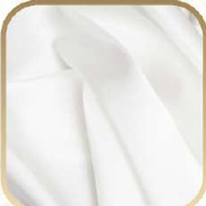
101 Snow White
Explore classic neutrals, romantic tones and statement shades for your custom bags.

101 Snow White
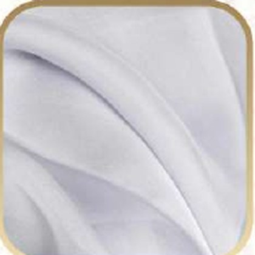
113 Pearl Gray
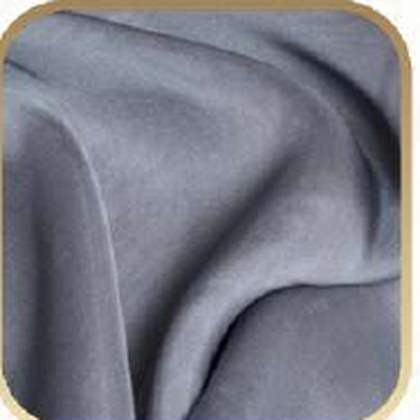
114 Steel Gray
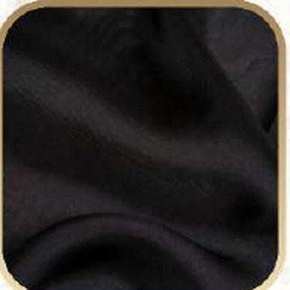
145 Classic Black
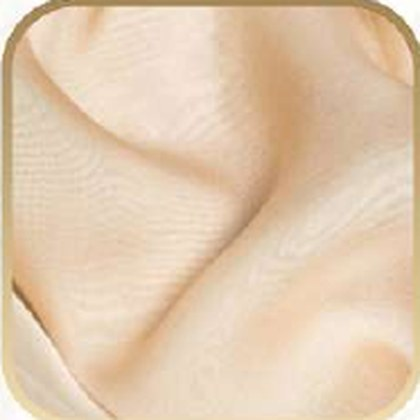
109 Champagne Beige
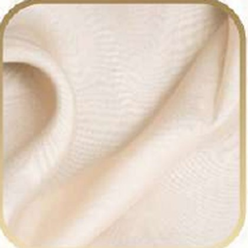
103 Soft Ivory
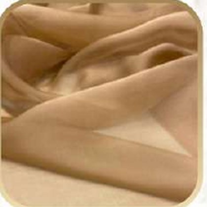
148 Light Mocha Brown
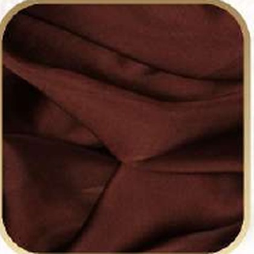
161 Dark Chocolate Brown
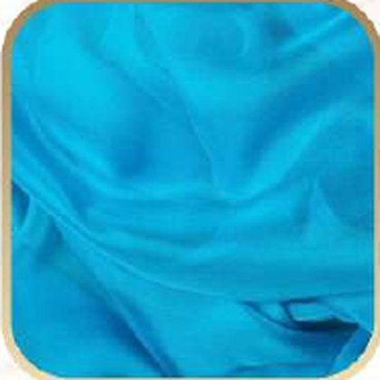
152 Turquoise Blue
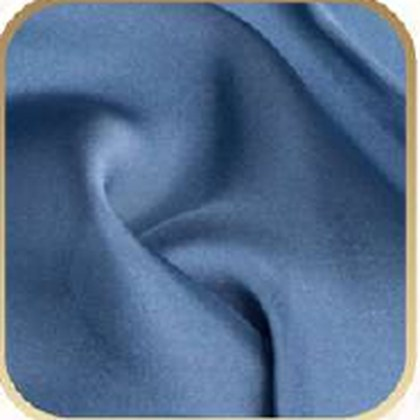
119 Indigo Blue
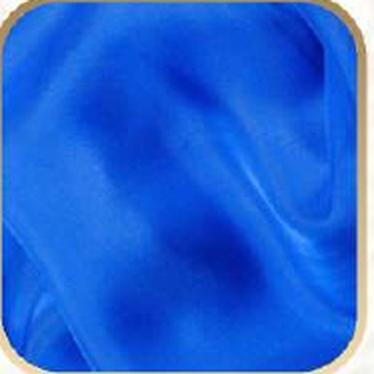
153 Royal Blue
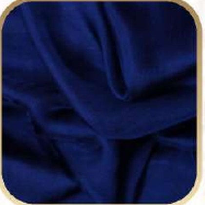
160 Navy Blue
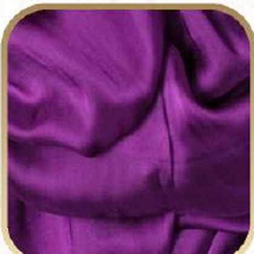
156 Royal Purple
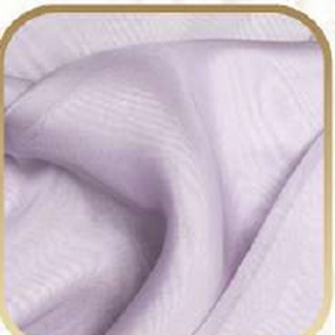
127 Soft Lilac
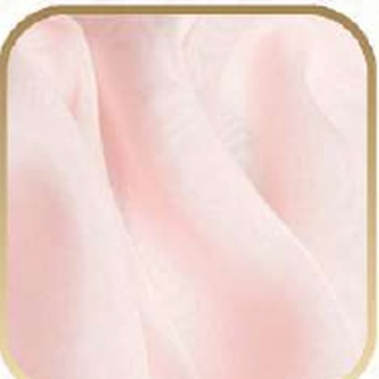
108 Blush Pink
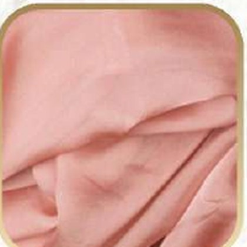
149 Salmon Pink
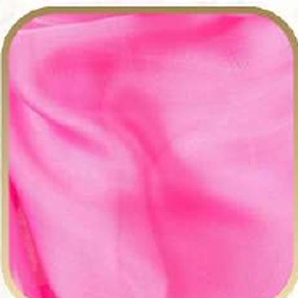
154 Hot Pink
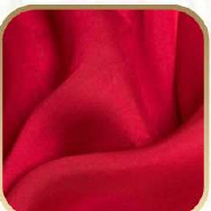
137 Ruby Red
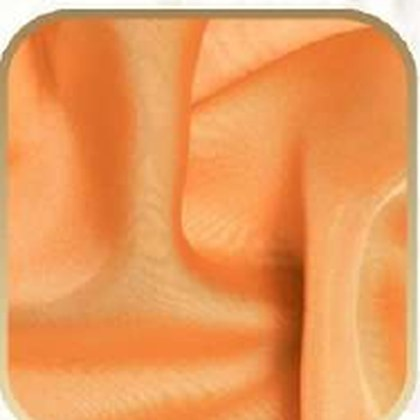
133 Peach Orange
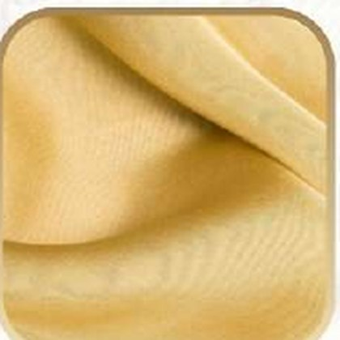
120 Soft Gold
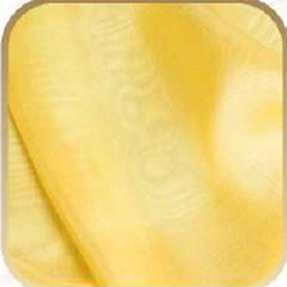
132 Butter Yellow
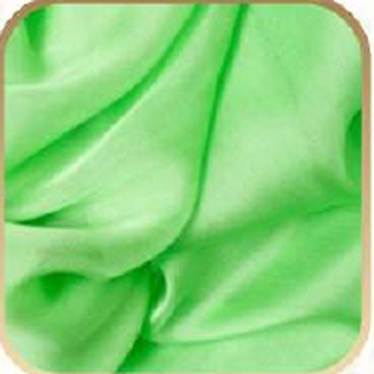
159 Fresh Green
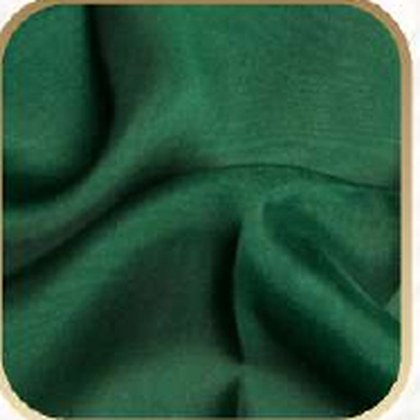
131 Emerald Green
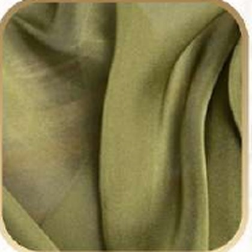
129 Olive Green
If you would like a custom shade or need help matching your brand palette, send a message and we will confirm the closest fabric options for your order.
const JETFORM_CONTACT_FORM_URL = "YOUR_JETFORM_CONTACT_URL";